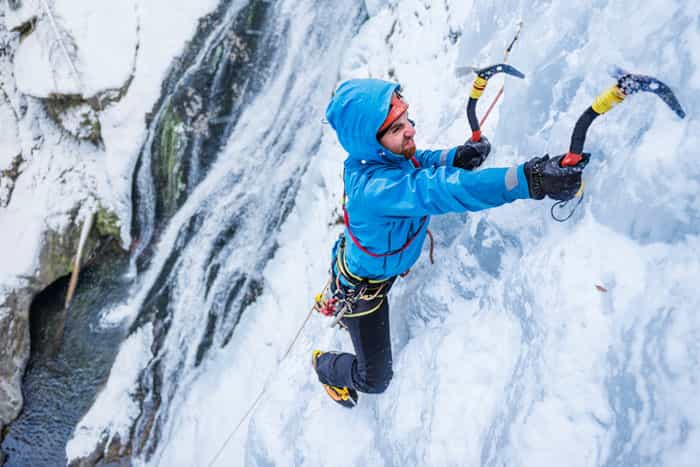
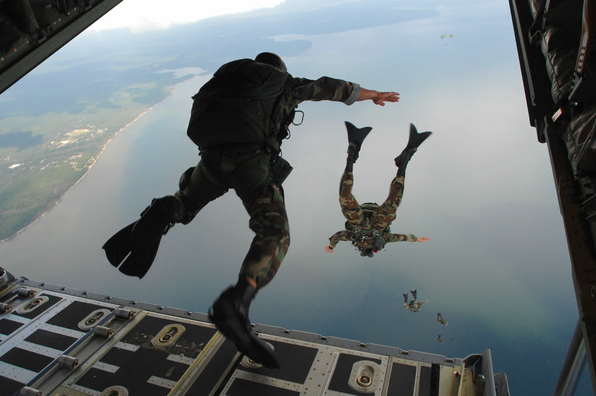

ROK writer Corey Savage is right to assert that one of the most authentic manifestations of masculinity is warfare. Everything else is pretty much only surrogate activities and often “inauthentic” as such (for example martial arts).
But a man should be hesistant to join an armed force and fight alongside the globalists, even though the underlying training process is constructive, masculine, and helpful whenever real catastrophes occur. An exception would perhaps be to fight ISIS but as much as I sympathize with Kurds and other Middle Easterners who suffer from the damages caused by the Sunni terrorist sect, I am hesitant to join them in their battles at this point.
Therefore a more individualistic approach might be taken, which also has the benefit of not imposing a person’s endeavor on anybody else. Both the German philologist Friedrich Nietzsche and the Italian cultural analyst Julius Evola have emphasized the importance of having a riskful existence (Evola himself became partially paralyzed after sauntering around in Vienna while the Austrian city experienced severe bomb attacks during World War II) and I also think life becomes incomplete if one merely lives through a petty, safe existence.
During the pre-family stage of a man’s life (often until 30-40 years of age during current circumstances), or in some cases during the last stages of it, a man can partake in a number of risky and authentic activities that will put him to the test. Below are a couple of concrete suggestions.
1. Snorkeling and scuba diving

Snorkeling and scuba diving are generally safe pursuits, but once you choose your own spots and conditions, or diverge from the typical safe route that a guide or instructor have provided for you, things become riskier and indeed real.
For instance, at the Great Barrier Reef in Australia, one can meet fairly large reef sharks and lethal stingrays. Also the weather conditions, such as the wave and currents, affect the level of risk.
2. Mountaineering and hiking

Needless to say, mountaineering and hiking can be sketchy. For instance, K2 in the Himalayas are one of the tougest peaks to conquer and there are many more such around the world, not just in Central Asia. Perhaps it is wise to start with a less demanding and expensive route and then decide afterwards if it is something for you or not.
Hiking can also be a real challenge. Personally I prefer (sub)tropical areas, like Taiwan, since they bring an exotic flavor to the senses and make you sweat a lot, but locations in temperate or arctic climate can be interesting to penetrate as well.
3. Urban exploration
ROK writer André Du Pôle has examined the Paris catacombs and I myself has endured similar activities in the Swedish capital.
Urban exploration is an excellent way to magnify the personality traits openness to experience and psychopathy. You need to be or become a little crazy in order to walk around in dark tunnels, hospitals or whatnot. It can also be combined with some more theoretical and practical knowledge of the particular environments that you visit. Asylums, for example, tend to be interesting.
Furthermore, a man can do less planned city walks in various shady neighborhoods, like Tijuana in Mexico or some American equivalent. Stay alert.
4. Wildlife excursions

Akin to hiking, wildlife excursions constitute another method to explore the real, objective earth authentically. Of course one can generally follow a safe route, but there are various ways in which a man can depart from it too.
I recall for instance when I walked around on Rincah Island in Indonesia, densely populated with the famous Komodo dragons, with only a stick as a tool to use if confronted by the big varans. And I met plenty of them from a very small range.
Of course there are many places in the U.S., Australia, Africa, and Europe which likewise offer risky encounters with wild animals.
5. Parachuting

I’ve only tried parachuting once, in tandem with an instructor. It is very unlikely in that case for something to go wrong. Hence it resembles a more extreme roller coaster ride, and therefore it is a borderline case with regard to authenticity.
However, the experience is still very thrilling and should be lived through at least once in a lifetime. It is also possible to continue with single-person jumps as a hobby, and which implies that a man has to take full responsibility for the process.
A much more extreme form is to fly with wingsuits, but that is a bit too difficult, expensive, and risky in my opinion. I rather stick with more simple and natural tasks.
In closing
A man, before building a family at least, should occasionally transcend his safe modern existence and try some fun or thrilling activities that will remind him that he lives. If he does not die from it, of course.
If you want to read more of William Adams’ material, check out his website Syncretic Politics.
Read More: 8 Ways To Live A Virtuous Life In The Modern Age